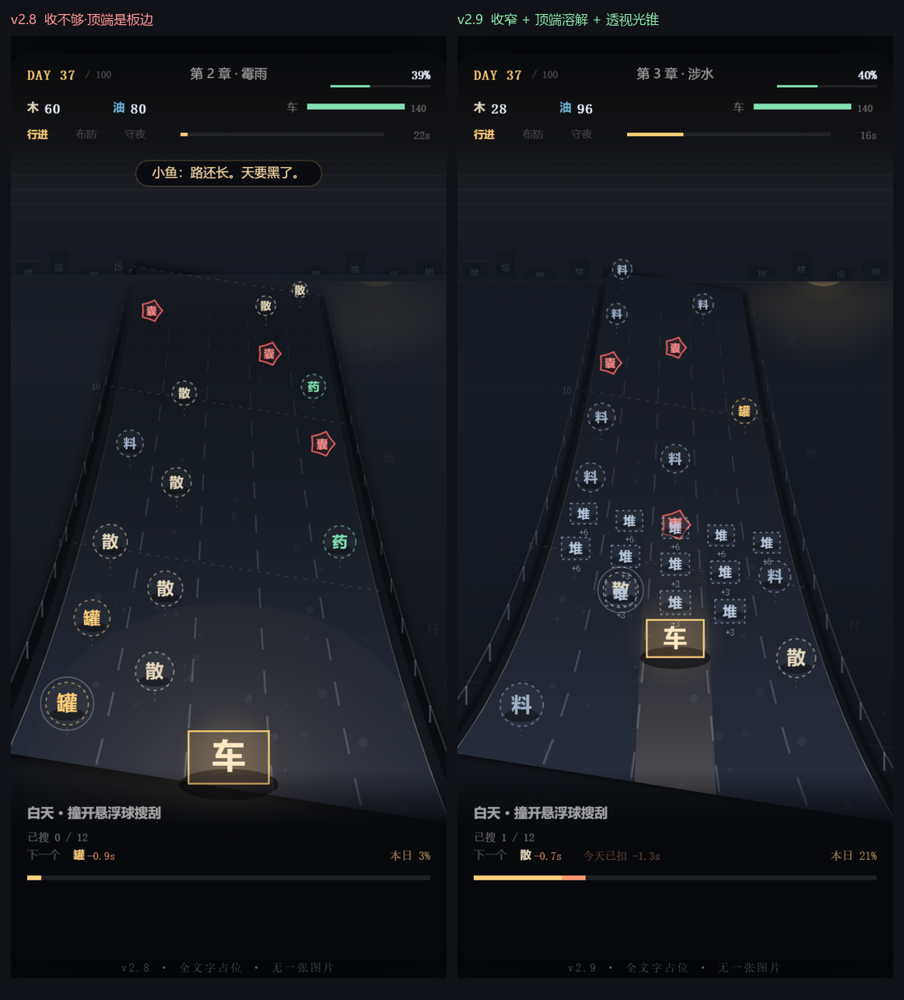

「道路不像是往远处延伸，像是悬浮在背景上」——这句话指的不是美观问题，是一组具体的几何错误叠在一起。 修法不在加特效，而在先把路画对。本文档记录两轮：v2.8 把"板子"变成"有透视的路"， v2.9 再把"收得不够、断口露馅、车灯是平的"这三处补掉。
我先按"加光影、加雾"的思路改了两轮，效果有限。后来把画面拆成几何来看，才发现是三个硬错误。
wAt(v) 的透视曲线算的。
两者形状对不上，路就成了"一块斜放的板"。
改：沿纵深采样 31 个点画曲线轮廓
fieldTop，而地平线在 fieldTop + 40。
也就是说，路比地平线还高 40px —— 它真的是悬在天上的。
改：引入 horizonY，路终止于地平线
wAt 让路面近宽远窄，但 rowY 是线性的，每户的行高完全一样。
宽度收缩 + 纵向等距，这两个信号互相矛盾，眼睛判定为"斜放的板子"而不是"延伸的路"。
改：rowY 换成透视曲线 (1+K)t/(1+Kt)

| 改动 | 做法 |
|---|---|
| 透视映射 | rowY / vOfY 换成 d = (1+K)t/(1+Kt) 及其反函数，纵向不再是等距 |
| 曲线轮廓 | 路面沿 v 每 0.5 户采样一次，31 个点连成闭合路径，边线自带收缩曲率 |
| 地平线对齐 | 新增 horizonY = fieldTop + 40，路的终点、地面起点、雾的起点统一到这一个值 |
| 路面渐变 | 近端 #282e3c → 远端 #171c25（v2.9：远端与地面同色，否则路在远处成为"暗楔子"） |
| 路肩 | 路面两侧各扩 6px（v2.9 收窄，原 11px 在近端成了黑沟），颜色比地面暗一档 —— 让路"陷"进地里，而不是压在上面 |
| 车道线与边线 | 逐户分段画，线宽和亮度都随纵深衰减。原来固定 setLineDash([5,7])，远处和近处一样密，把透视打死了 |
| 路面颗粒 | 110 个固定种子的点，近大远小。一帧不动，不会抖 |
| 护栏 | 两侧每户一根柱子 + 一条横梁，柱距随透视压缩 —— 现实公路照片里最会"报距离"的东西 |
| 落影 | 球、闷囊、料堆、车都有地面投影；球本身抬离地面 0.4 个半径 |
| 远端雾 + 远景 | 地平线处一层薄雾（v2.9 收薄到 0.055 画面高，全宽厚雾会把地面的纵深线索一起糊掉）；两侧加了淡的楼/塔/树剪影，给"远处"一个实体参照 |
| 地面 | 渐变起点与天空同色 #151922（亮带会夹着路，帮"悬浮"的忙），撒 54 个碎石点，残骸改成跟着路走的世界坐标 |
| 车灯光锥 | 沿路铺开的透视梯形（v2.9 重做：原来是屏幕空间的椭圆斑，不服从透视，等于往路上糊了一块平光），lighter 叠加 |
| 路顶端溶解 | v2.9 新增：裁在路面内的渐变把顶端 40px 抹成地面色，路的断口不存在了，而不是"被一条短边代替" |
| 参数 | 值 | 作用 |
|---|---|---|
PRS_K | 0.55 | 纵向压缩。0 = 等距（旧版），越大远端越挤。0.55 时近端每户 47px、远端 20px |
PRS_KW | 2.35 | 横向收缩。v2.8 用 1.50，远端仍留 0.40 画宽 —— 收不够，路的顶端就是"板子上底边"。v2.9 收到 0.30 |
MELT | 0.085 | 路顶端溶进雾里的高度（占画面纵深的比例）。新增于 v2.9，专治"路的断口" |
horizonY | fieldTop+40 | 地平线。路的终点、地面起点、雾的起点 |
nearW | W×1.02 | 近端路宽，略超画布。原来 0.76，两侧留出两条窄黑边，反而更像贴纸 |
PRS_KW 比 PRS_K 大？
严格自洽的透视里，宽度收缩比应该等于 1/(1+PRS_K)，也就是远端路宽约 0.65 倍。
但 15 户铺在真实透视里会被压得非常狠（近 5 米 vs 远 50 米，宽度差 10 倍），照物理做球会挤成一片。
所以横向多收一点（负责"远"），纵向少压一点（负责"不挤"）。
| 检查项 | 结果 |
|---|---|
| 玩法是否受影响 | 否。3 局贪心：88~89 天 / 802~805 户 / 全胜，与 v2.7、v2.8 基线一致 |
布防点击反算（cellAt） | 中路 col2 三排命中 v=2.5/5.5/8；左右 col0/col4 命中 —— 几何改了但反算仍对齐 |
| 78 项回归 | 全通过（core.js 一行未改） |
| 球是否跑出路面 | 否。路面宽度与球的横向定位同源于 wAt |
| 远端球是否重叠 | 球径改为 min(行高×0.44, 车道宽×0.38)、下限 8px，远端收缩加剧后仍能看清占位字 |
| 路顶端像素采样 | 路中线与两侧地面只差 2 个色阶 —— 断口已被溶解，放大检查无"上底边" |
| 黄昏 / 夜晚 | 布防网格、作用范围椭圆、夜色遮罩均正常；夜间路肩黑沟消失后画面更干净 |
第一轮截全景图复查时发现：几何对了，但画面里仍有一股"贴纸感"。逐项排查出四个残留问题， 这四个全是"光与形状不服从同一个透视"的错。
PRS_KW=1.50 时远端路宽还有 0.40 画宽。一条 400 米外的路在手机屏上应该只剩十几像素，
40% 意味着路的尽头仍是"一条宽边"。
改：PRS_KW 提到 2.35，远端只留 0.30
v=15 就停，顶端必然是一条横边。m=15 的里程刻度还正好压在这条边上，把它描亮。
改：新增 MELT——裁在路面内的溶解渐变，把顶端 40px 抹成地面色；里程刻度只画到 12
laneCX/laneUnit 算出，跟路面同一个透视
#171c25；地面渐变起点改到与天空同色 #151922
| 项目 | 原因 |
|---|---|
| 斜投影 9° 的剪切 | 这是原设计（core.js 是 15°），左高右低是刻意的。只是现在有了曲线边，剪切看起来不那么"板"了 |
| 天空 / 太阳 | 只把位置对齐到新的地平线，颜色和尘幕横纹没动 |
| 路延伸到玩区之外 | 正确做法是路画到 30~40 户再消失，但那会把 15 个球压到画面上部。等球数与纵深重排时一起做 |
| 正式美术 | 这一版仍然全部是文字占位。所有新增元素（护栏、碎石、剪影、田埂）都是几何线条和字，没有一张图 |
回填 core.js | 等这一版观感确认。回填时这套透视要一并搬过去，因为 core.js 现在还是四点梯形 + 线性行距 |
永夜微光 · v2.9 路面纵深修复 · 边要曲、路要落地平线、行距要跟透视、光要服从同一个消失点